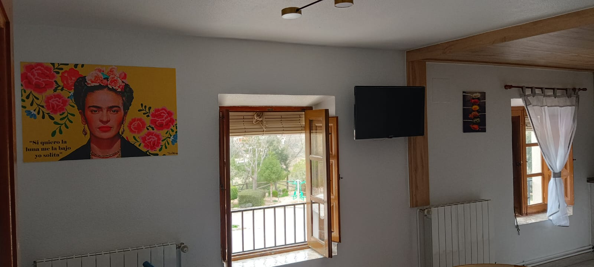
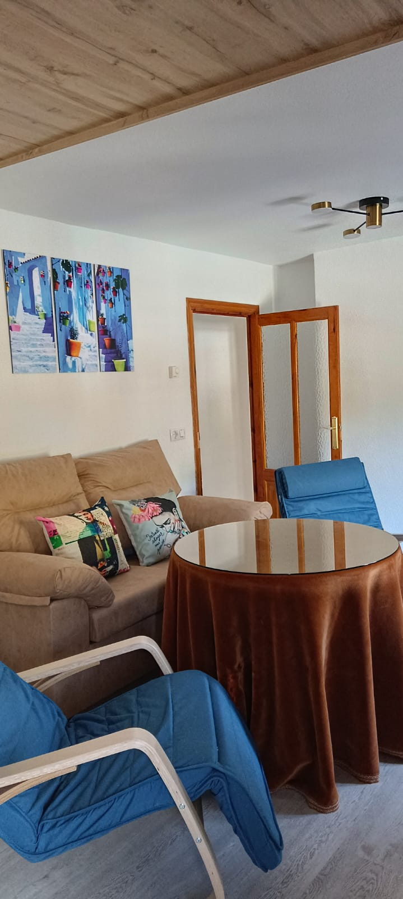

Estudio Planta Baja · 2 a 4 Plazas
"Un espacio acogedor y accesible"
Casa Lucia es un precioso estudio situado a pie de calle en la C/ Del Camino de Segura, con acceso directo y totalmente adaptado para personas con movilidad reducida (PMR).
Este estudio destaca por su increíble calidez gracias a la maravillosa estufa de biomasa, que lo convierte en el retiro ideal para el invierno, manteniendo a la vez toda la frescura estructural del diseño tradicional para los meses de calor.
Equipado con todo lo necesario para hasta 4 personas, es el equilibrio perfecto entre funcionalidad, comodidad y la elegancia clásica de nuestros alojamientos.
Equipamiento
- Descanso Principal: Cama de 135cm, ropa de cama completa y amplios armarios.
- Zona de Estar: Sofá cama de 135cm (para 2 personas adicionales), mesa auxiliar y TV de pantalla plana.
- Cocina + Comedor: Nevera, Vitrocerámica, Microondas, Cafetera Italiana, menaje completo y mesa de comedor.
- Baño: Completo con ducha adaptada, toallas y productos de aseo.
- Climatización: Excelente y acogedora estufa de biomasa.
- Accesibilidad: Accesos y espacios diseñados para Personas con Movilidad Reducida.
- Servicios: Parking gratis.
- Seguridad: Extintor.


